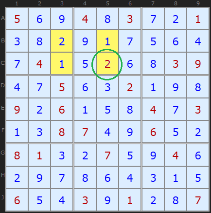
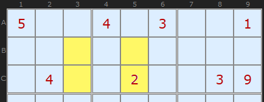
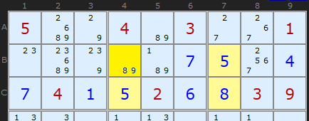
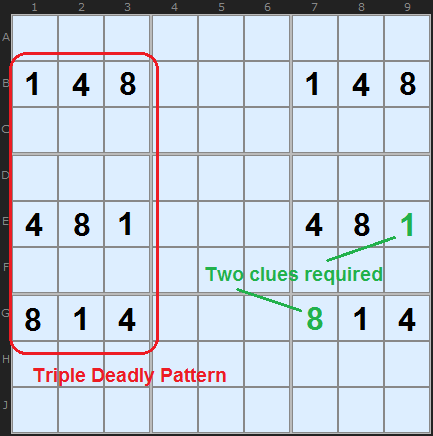

SudokuWiki.org
Strategies for Popular Number Puzzles
Avoidable Rectangles
Avoidable Rectangles are a most unusual strategy - and, to this author's knowledge, the only one that makes use of solved cells. We are used to the idea that a solution kills all the other numbers of the same value along the row, column and box, meaning that all information about that cell has been used up. Apparently, this is not so.

To appreciate this strategy, we have to put ourselves in the shoes of the puzzle creator, not the puzzle solver.
Consider the solution in diagram to the right. We have four cells that are shaded. To create a Sudoku puzzle, some removal process has to take place - some method of taking out numbers so that they can be filled in again by a puzzle solver. The crucial constraint is that the puzzle must have a unique solution. If the puzzle maker removed all four shaded cells, then there would be at least two solutions, since the 1 and the 2 are interchangeable in this situation.

There are millions of possible puzzles derivable from a completed Sudoku board. The top third of the puzzle above is just one example. Notice, however, that at least one of the four cells (C5) from our example is a clue - which avoids creating a double solution.

Work on the puzzle so far has fixed 5 in C4 and B7 and 8 in C7, but the final corner has two options ‑ an 8 or a 9. If B4 really were an 8, then we’d have the same situation as in the case of the 1 and 2 where the puzzle maker was forced to leave a clue. Since our newly identified rectangle does not contain a clue in the corners, we can’t have an interchangeable pair here. The 8 is not a valid solution, so we can remove it and place a 9 in B4.
So the rule of Avoidable Rectangles is:
We can remove a candidate that forms a potential interchangeable pair with three other cells spread over two boxes where the three other cells are solved cells (not clues).
Update March 2026: This strategy does now exist in the solver since the user can distinguish between clues and solved cells. If you turn off 3D Medusa this Avoidable Rectangle example now shows up. (credit for finding: Frisbee)
So the rule of Avoidable Rectangles is:
We can remove a candidate that forms a potential interchangeable pair with three other cells spread over two boxes where the three other cells are solved cells (not clues).
Update March 2026: This strategy does now exist in the solver since the user can distinguish between clues and solved cells. If you turn off 3D Medusa this Avoidable Rectangle example now shows up. (credit for finding: Frisbee)
Higher Order Avoidable Rectangles
The Deadly Pattern of four cells in exactly two rows, two columns and two boxes can be extended to three rows, three columns and three boxes. This applies to both Unique Rectangle and Avoidable Rectangles.

Consider this set of numbers here. {1,4,8} are solutions in a finished puzzle - the rest of the numbers have been removed. From the point of view of an Avoidable Rectangle the puzzle maker must make at least two of these numbers clues - and two different numbers at that. I've shown in green two example cells that will ensure there is a single solution. If none of these nine cells were clues then the puzzle solver would fine {1,4,8} in all those places and any combination would give a solution. So the puzzle maker is forced to insert at least two clues.
Comments
Email addresses are never displayed, but they are required to confirm your comments. When you enter your name and email address, you'll be sent a link to confirm your comment. Line breaks and paragraphs are automatically converted - no need to use <p> or <br> tags.
... by: Charles Cochems
Solving the three cells eliminated one of the two candidates, but that doesn't stop you from eliminating the other one!
And that's the takeaway. You can still use an already destroyed unique rectangle, even if other deductions destroyed it before you spotted it.
This probably works for other unique rectangle types as well, but this is the one that's easiest to spot. :)
... by: Luc Lion
In your example with 5s and 8s in B4, C4, B7 and C7, it does NOT matter which value was a clue (or a given) and which value has been deduced. If you place a 8 in B4, you create a pattern that opens the door to a duplicate solution. The solutions with {B4, C4, B7, C7} = {8, 5, 5, 8} is fully interchangeable with {B4, C4, B7, C7} = {5, 8, 8, 5}
This is because all logical deductions that are made for solving a sudoku puzzle are based on the exclusion rule within a house (no value can appear twice in a house) which leads to strong links and weak links between value candidates (or between candidates and a naked candidate or solved cell, if we look at the grid before completing all direct eliminations). These logical "links" generate a mathematical "equivalence relation" between value candidates; it can be worded as "has a logical link with". This relation is reflexive, symmetric and transitive and thus it creates equivalence classes between all value candidates or maked candidates (solved cells).
These classes are logically separated and this means that the global solution will be unique if all classes have a unique solution. If, for instance, class A has 2 solutions, class B has 3 solutions and class C has 2 solutions, the global grid will have 12 solutions. And is any class has zero solution, the global grid has no solution either.
The properties of equivalence classes is implcitly used in the strategies; "Bi-value grave" (1 class is the solved cells, and 1 class is the bi-value cells plus the potential bi-value cell), "Avoidable rectangle" (the 4 cells of the rectangle compose a class), and the "Unique rectangles" (the 4 cells form a separate class when the conditions for forming a "deadly
pattern" are fulfilled.
In all these 3 strategies, the logic combines:1. the recognition of the equivalence class, or its potential creation, 2. the recognition that, if the class is created, it generates 2 solutions (within the class), 3. the condition that prevent the creation of the class are thus considered true.
That logic could also be used in the case where the class holds zero internal solution. However, in all practical cases I have studied, the prevention of the zero solution condition was internal to the class and, thus, there was no need to identify the condition for generating the class or preventing its generation.
Let's come back to the example with B4, C4, B7 and C7 associated with values 5s and 8s as drawn above. If B4 is an 8, the 4 cells are an isolated subset (to the point of view of exclusion rules or "link"). That is, all the solved cells or value candidates with which any of the 4 cells has a strong link or a weak link are another one of the 4 cell values. The impact on other candidates in the 2 boxes or in the 2 lines and 2 columns that are concerned is exactly the same for one or another solution.
And this is independant on whether the cells have been valued as a given or from other logical deductions. The key is: if B4 receiving value 8 is a solution, then {B4, C4, B7, C7} = {5, 8, 8, 5} is also a solution. Thus B4 must NOT receive 8.
And, by the way, the strategy behind "Avoidable rectangle" can be extended to other patterns than rectangle provided that all value candidates within these cells for an equivalence class through the relation "has a strong or weak link with". Then is these cells form a deadly pattern like being all but one bi-value cells, then the equivalence class must be broken.
I hope that I have not been too long or too confused.
Best regards,
Luc Lion
The distinction between solved cells and given digits DOES matter. A given digit in the pattern stops you from swapping around numbers and creating an extra solution. (that is the point of the given digit, its value cannot be changed.)
... by: Stephen Lucerne
... by: John
My offline solver which does keep track of clues (since they are inputs) does include this strategy. A recent run on Ruud's top 50,000 set - my favourite test set - finds 22 instances. Could be more since its dependent on the order, but I include it just after Jelly-Fish and before the other UR strategies
... by: Tom
... by: Duncan
One thing to look out for as well is when the ambiguity extends over three vertical pairs of cells in a horizontal line (or vice versa), which I have seen a couple of times.
... by: Eric
... by: Quescaisje
bill
... by: CS Vidyasagar
I shall try and locate such Avoidable Rectangles and send them to you.
thanks and regards,
Vidyasagar
... by: Leo Salmonsson
Easy to follow and easy to understand. Ill be back to this site for more.
Thanks a lot!
... by: paolo
In the last example IF YOU PUT 5 in B7-C4 and 8 in C7 this means that you had some reason to put that numbers there. In other words that 5s and 8 cannt be swapped. Otherwise they should not have been placed. So it is arbitrary to deduce from them the impossibility of having an 8 in B4.
I mean that (IMHO of course) you won't ever arrive in that position (last example) because you should have applied the UNIQUE RECTANGLE tecnique before, in case.
Hope my explanation is understandable.....
paolo
Your argumentation is right. You should consider the following argument instead:
Imagine at the end you have a solution containing the 8 in that cell. Then you can find a second solution swapping those 4 cells, which is also a solution to the given sudoku.
This is impossible as we know there is only one solution to the given sudoku.
So the 8 cannot go in that cell.
Hope this helps understanding,
philipp
... by: Pritt Galford
Look at filled-in cells A3 & A9, and C3 & C9. They are an interrelated pair, thus allowing two solutions to the puzzle which is a no, no. There are others of the same problem in the example.
Also see the top 1/3rd of the puzzle of your last example on the same webpage. It has cell A5 with candidates 8 & 9 but nine is already filled in at J5.
Bottom line: I think your Avoidable Rectangle logic is correct and sound, but I'm finding there sure are a lot, in fact it's rather a common occurrence, especially in difficult Sudokus, to find multiple solutions which are violations of the unique solution rule. Your thoughts, please.
... by: Malikov
... by: Ken Stephens
Thanks for a great site which explains things so clearly and on just the right level.
... by: Gary Maness
Do you have Sudoku Dragon? I can send you the partially solved puzzle. i am interested to know if this forms a rule or did I just get lucky! I mean, in your example, the two end cells, the 5's could see the forht cell and the first cell, the 8. In mine the end cells could the target, but only one could see the first cell.
I hope this makes sense. BTW, I LOVE this site. I have learned so much about the game. You should consider charging admission! I do plan on buying the Index.Dat program and the book when I can though.
Thanks a bunch.